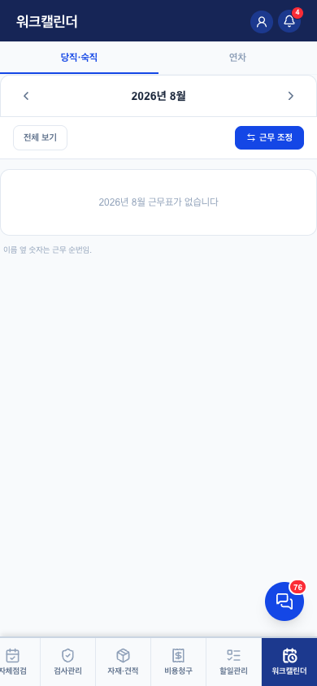
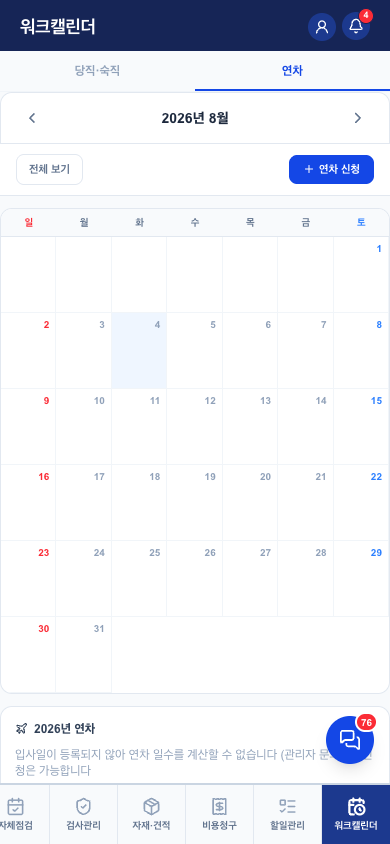

워크캘린더 v0.1
1. 이 화면의 정체 — 근무 일정의 단일 창구
- 당직·숙직 근무표(순번 기반)와 연차 신청·잔여·내역이 한 화면 — 마이페이지의 연차 기능이 여기로 이동해 옴
- 홈의 워크캘린더 미리보기 스트립이 이 화면의 축약판
- 근무 교환: 기사끼리 요청→수락 (교환 요청·결과 알림 2종)
2. 하위 2탭


| 탭 | 핵심 규칙 |
|---|---|
| 당직·숙직 | 월 근무표(이름 옆 숫자 = 순번). 근무 조정(교환) 요청. 전날 18:00에 "내일 내 당직" 알림(pg_cron) |
| 연차 | 신청 기간에 본인 당직·숙직 끼면 차단 — "근무 교환 먼저" 안내. 입사일 기준 연차 자동 계산(yearsOfService). 승인·반려 알림 |
4. QA 체크포인트 — 2026-08-04 검증 (QA-RULES 7장)
- ✅ 연차-당직 충돌 차단 (소프트 종류는 "관리자 재배정 필요" 안내로 통과)
- ✅ 교환 요청→수락→근무표 반영 + 알림 2종
6. 화이트라벨 — 구일전용 → 타사 일반화
| # | 지금 | 어떻게 |
|---|---|---|
| 1 | 당직·숙직 제도 자체가 구일 운영 방식 (순번제·전날 18:00 알림 등) | 근무 종류·순번제 사용 여부를 tenants.settings로 — 당직 제도가 없는 회사면 탭 자체를 기능 플래그로 숨김 |
| 2 | 연차 정책(연 개수 계산식) | 한국 근로기준법 기준이라 공통 유지 — 회사별 가산 규칙만 설정 여지 |
변경 이력
| 버전 | 날짜 | 변경 |
|---|---|---|
| v0.1 | 2026-08-04 | 최초 작성 — 2탭 캡처, 연차-당직 충돌 규칙, 당직 제도 자체의 테넌트화 관점 추가 |